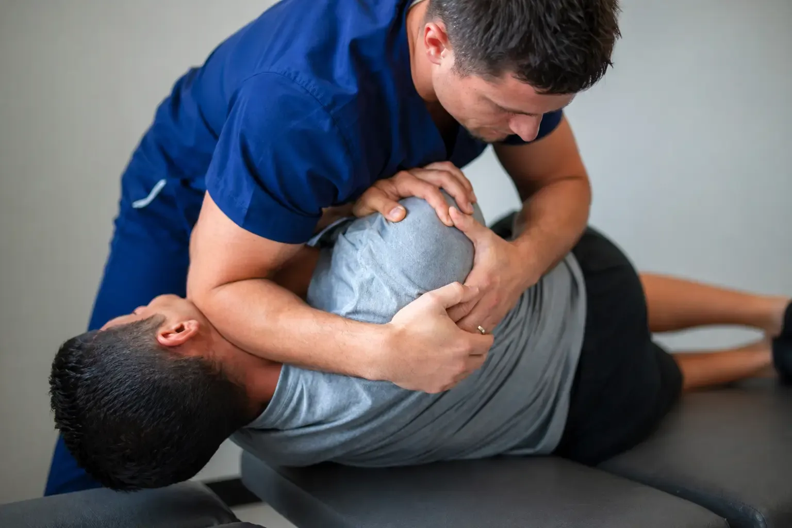

Whether it is a weekend warrior, a high school athlete, a golfer, or someone who works physically demanding hours, active bodies develop movement patterns worth checking. We evaluate structure, not just the spot that hurts.
Sports injuries and performance issues are not always isolated to one painful area. Spinal mechanics, posture, movement patterns, recovery, and nervous system stress can all affect how the body performs. Our evaluation helps identify what may be limiting movement, comfort, or performance.
Sports chiropractic care focuses on identifying those structural and nervous system stress patterns before they create bigger problems. At Life Charge Chiropractic, we evaluate how your spine and pelvis are functioning under the demands of your sport or activity, and address what we find specifically.
Dr. Palmer is an active rugby player and understands physical demand firsthand. He evaluates athletes and active adults with a focus on movement quality, spinal mechanics, and nervous system function, not just pain location.
Schedule First Visit
A shoulder injury often has a thoracic spine component. A hamstring problem often has a pelvic alignment component. We look at the connected system, not just the painful part.
"I play rugby. I understand what it feels like to train hard and recover slow. A lot of what active adults call 'normal soreness' is actually mechanical stress that is worth evaluating and addressing before it becomes an injury."Dr. Palmer Piana, Life Charge Chiropractic
Most sports injuries are not random. They are the breaking point of a longer-developing pattern. These are the specific things we screen for, so the care plan changes the underlying pattern, not just the part that hurts today.
An athlete walks in with a strained hamstring. The story is usually the same. They were sprinting, they felt a pop, now they cannot run. The instinct is to treat the hamstring. Ice it, stretch it, foam roll it, wait it out. That handles the symptom. It does not handle the reason that hamstring failed in the first place.
Most sports injuries are the breaking point of a pattern that has been building for weeks, months, or years. A pelvis that has been rotating slightly. A hip that has lost a few degrees of motion. A core that fires a half-second late. The tissue that finally gives way is rarely the tissue that started the problem. Symptom care addresses the breakdown. Cause care addresses the pattern that produced it.
This is why an athlete who feels fine can still be at high risk. The body is good at compensating. It will route around restrictions and asymmetries until something runs out of room. By the time pain shows up, the underlying pattern has often been there for a while. A focused exam can find it before it costs you a season.
Structure plays a real role in performance and durability. When the spine, pelvis, and nervous system are functioning well as a connected system, force transfers cleanly, recovery happens faster, and the body absorbs load the way it was built to. That is what specific chiropractic care is built around, not just helping you feel better today, but changing the pattern so the next breakdown does not happen.
Schedule your first visit at Life Charge Chiropractic in Gallatin, TN. Same-week appointments available.
Schedule First Visit